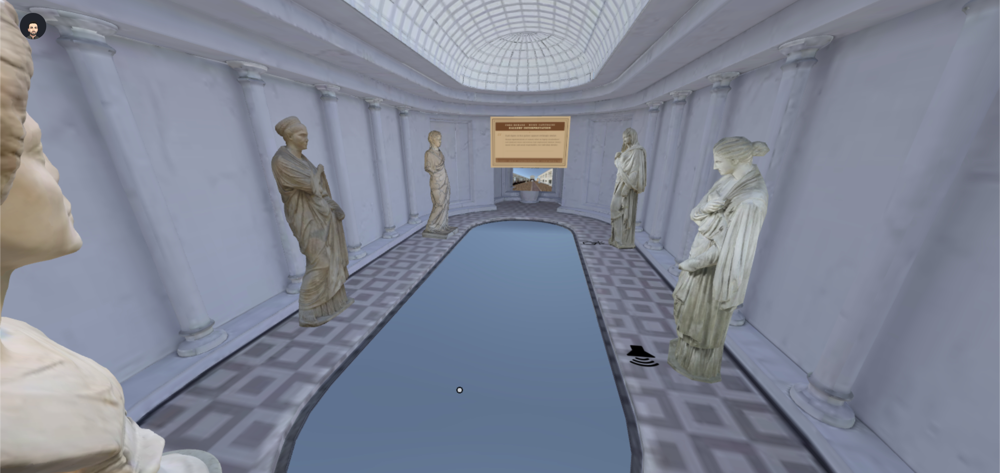
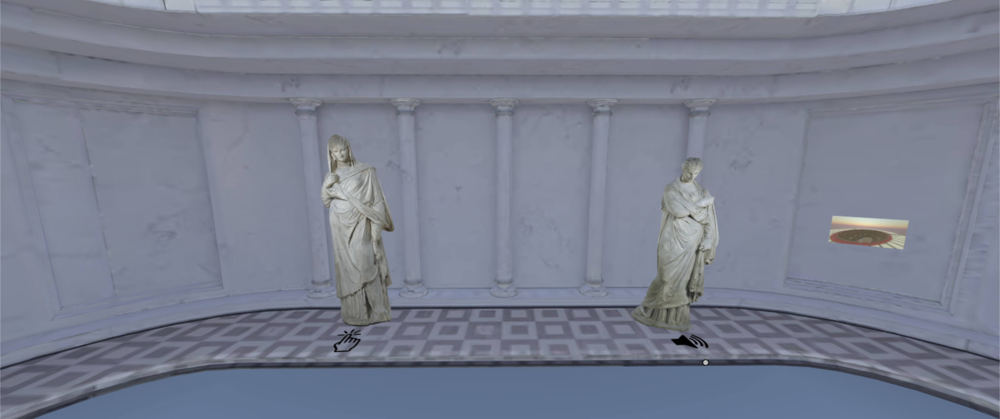
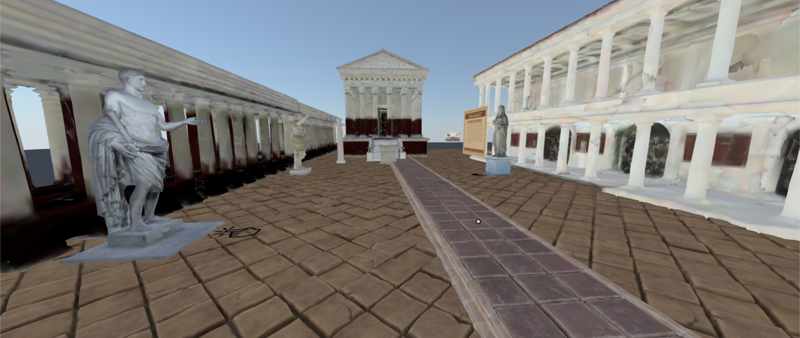
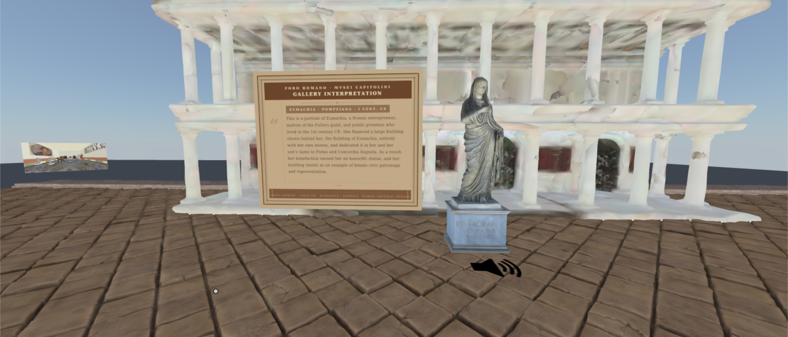
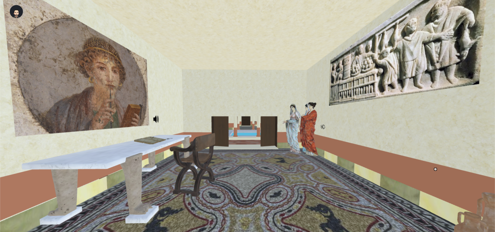
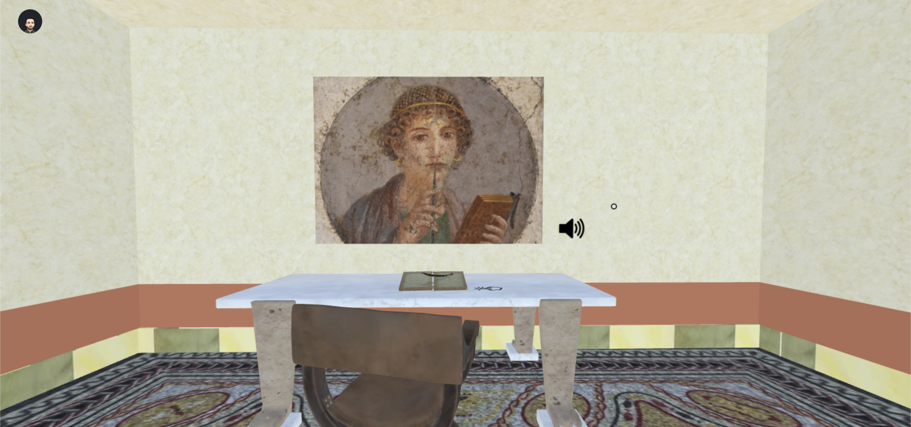

This interactive VR experience challenges the idea that Roman representations of women were purely idealized and lacking individuality. Users move through three immersive environments—a museum gallery, a civic forum, and a domestic villa—interacting with statues and objects through visual panels and audio narration.
While these figures often appear visually similar, the environments they inhabit reveal something deeper: women as civic leaders, intellectuals, and economic participants. The experience transforms passive observation into active historical interpretation.
Museum gallery, Pompeii civic forum, and Roman domestic villa — each with distinct narrative intent.
Clickable statues and artifacts triggering image panels and audio narration throughout each space.
Spatial audio trigger system per object, layered with historical context panels in 3D space.
Each environment represents a distinct lens through which Roman women's identity was constructed — and through which modern audiences often misread it. Together they form a cumulative argument about context, visibility, and agency.
A contemporary-style gallery filled with idealized Roman female sculptures, designed to feel like a modern museum — not ancient Rome. The Small and Large Herculaneum Women appear nearly identical and lack inscriptions, highlighting how individual identity is lost through curatorial framing.
A reconstructed 1st-century civic space with temples, colonnades, and honorific statues. Dominated by male representation, yet centered on the Building and Statue of Eumachia — evidence that women held visible and powerful roles in public life despite idealized appearances.
A domestic interior reframing women as thinkers and workers. The Portrait of a Young Woman with Stylus and a Relief with Market Scene together show women as active contributors — educated, economically engaged, and fully present within Roman society.
The fully interactive multi-space VR experience is available now via MUD Foundation's verse platform. No installation required — explore the three environments directly in your browser.
Built using MUD Foundation / XR Creator tools with a reusable raycasting interaction system, toggle-based UI panels, and audio triggers across all three scenes.
Screenshots, environment renders, and in-world captures from the three VR spaces. Add your project images below.






Watch a full walkthrough of all three environments — the Museum Gallery, Pompeii Forum, and Roman Villa — demonstrating the interaction system, audio narration, and narrative progression.
Built on MUD Foundation / XR Creator, the project centers on a reusable interaction architecture designed to function consistently across three distinct 3D environments.
Interaction design can transform how audiences interpret historical content — the mechanics are the argument.
Context — the environment — is just as important as the object itself in communicating identity and power.
Even simple mechanics create meaningful engagement when deployed with intention across a coherent narrative arc.